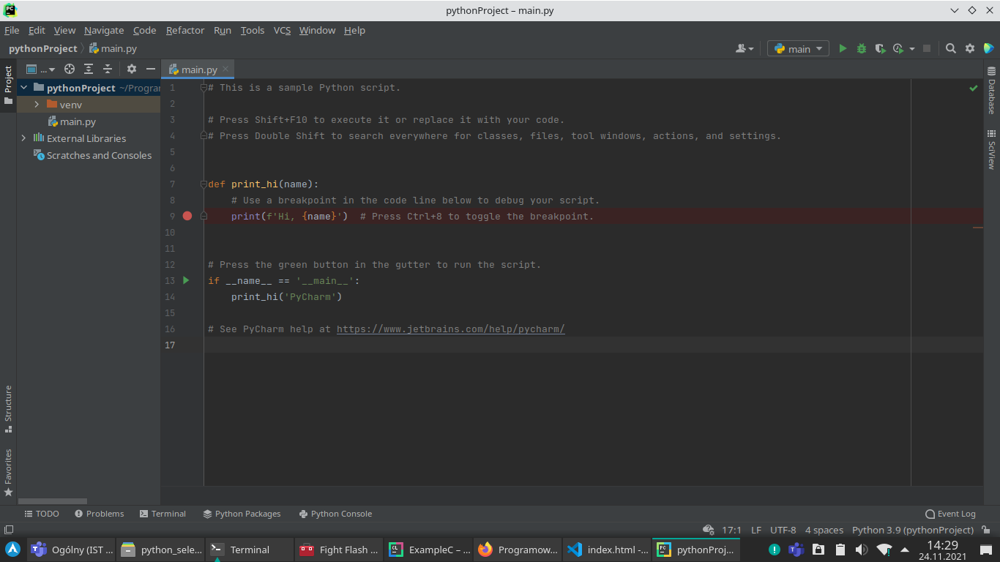

Założenia
Aby zrozumieć ten poradnik, trzeba znać:
- Podstawy C (lub dowolnego innego języka programowania)
- Podstawy HTML i CSS (Selenium opiera się na wyszukiwaniu w kodzie strony elementów HTML, więc ciężko napisać skrypt Selenium bez znajomości chociażby podstaw tych języków)
Część 1 - Instalacja środowiska
Do zrobienia całego zadania polecam sobie zainstalować IDE PyCharm. Wersja Community jest za darmo (nawet bez licencji studenckiej).
Wiadomo, na upartego skrypty można pisać i w Notatniku, ale PyCharm ma według mnie najlepsze podpowiadanie składni, a ono może się bardzo przydać.
W PyCharmie tworzymy nowy projekt "Pure Python" (czysty Python).
Powinien się pokazać domyślny skrypt, jak na obrazku poniżej.
{kind=link}
Odpalamy go zielonym trójkącikiem w prawym górnym roku programu, lub skrótem klawiszowym Shift+F10.
Jeśli w konsoli na dole programu pokaże się "Hello, PyCharm", to znaczy że wszystko działa dobrze.
Kasujemy wszystkie 17 linijek i zostawiamy pusty projekt.
Część 2 - Absolutne podstawy programowania w Pythonie
Żeby używać Selenium, przydałoby się znać chociaż absolutne podstawy Pythona.
Znając C, nauczenie się kilku podstawowych instrukcji Pythona nie powinno zająć dłużej, niż kilka minut.
Wyświetlanie tekstu w konsoli:
Tak wygląda skrypt Pythona, który wyświetla tekst w konsoli:
print("To jest tekst w konsoli")
I to wszystko, starczy jedna linijka kodu, aby mieć działający skrypt, który coś robi.
Żadnej funkcji głównej, żadnego dołączania bibliotek. Bardzo proste, bo sam Python jest bardzo prostym językiem.
Tworzenie zmiennych w Pythonie:
Tak wygląda tworzenie i wyświetlanie zmiennych:
my_variable = 100
my_other_variable = "zmienna tekstowa"
print(my_variable)
print(my_other_variable)
Jak widać, przy tworzeniu zmiennej nie podajemy jej typu.
Dzieje się tak dlatego, że Python sam automatycznie tworzy zmienne w momencie pierwszego przypisania wartości. Nie ma więc potrzeby wcześniejszej deklaracji zmiennych, tak jak trzeba to robić na przykład w C.
Brak średników:
W Pythonie nie stawiamy średnika na końcu linijki.
my_variable = 100 # nie ma tu średnika
print(my_variable) # tu też go nie ma
Komentarze:
W Pythonie komentarz jednolinijkowy tworzy się znakiem #
# To jest komentarz
print("To nie jest komentarz")
# To też jest komentarz
Instrukcja warunkowa:
W Pythonie instrukcję if-elseif-else zapisuje się następująco:
x = 10
y = 1000
if x == y:
print("***********")
print("x jest rowne y")
print("***********")
elif x > y:
print("x jest wieksze od y")
else:
print("x jest mniejsze od y")
Zwróć uwagę na dwie rzeczy - brak klamer oraz wcięcia.
W Pythonie prawidłowe wcięcia są bardzo ważne, bo zastępują one nawiasy klamrowe używane na przykład w C.
Jeżeli w konsoli wyskoczy wam coś takiego, jak IndentationError, oznacza to, że wcięcia nie są wykonane prawidłowo.
Pętla while:
Tak zapisuje się pętlę while:
x = 10
while x < 100:
print(x)
x += 1
W języku Python nie istnieje pętla do-while (jest tylko while).
Pętla for:
Tak wygląda przykładowa pętla for, która wykona się 10 razy:
for n in range(10):
print("Ten tekst zostanie wypisany 10 razy.")
Część 3 - Instalacja biblioteki Selenium
Czasami się zdarza, że nawet jeśli zainstalowaliście Selenium przez konsolę systemową [tak jak było na labach], to PyCharm nie będzie jej widział.
Wtedy trzeba na dole PyCharma zaznaczyć Terminal, a następnie wpisać komendę pip3 install selenium właśnie tam, czyli w terminalu wewnątrz programu.
{kind=link}
Trzeba też pamiętać o pobraniu sterownika geckodriver - link do niego jest podany w zadaniu.
Trzeba mieć też na komputerze zainstalowaną przeglądarkę Firefox, inaczej skrypt nie zadziała.
Część 4 - jak używać Selenium?
Potrzebne biblioteki:
Najpierw zaimportujemy wszystkie obiekty, które będą nam potrzebne. Poniższe linijki trzeba wstawić na samej górze skryptu.
from selenium import webdriver
from selenium.webdriver.common.keys import Keys
from time import sleep
Otwieranie i zamykanie przeglądarki:
Taki oto skrypt spowoduje otwarcie przeglądarki, poczekanie 3 sekundy i następnie zamknięcie okna:
# (pamiętaj o zaimportowaniu bibliotek)
driver = webdriver.Firefox(executable_path="/bin/geckodriver")
sleep(3)
driver.quit()
Zamiast /bin/geckodriver trzeba wstawić ścieżkę do rozpakowanego sterownika, na przykład /home/uzytkownik/Pobrane/geckodriver lub C:/Users/Uzytkownik/geckodriver.exe
Przechodzenie na inną stronę:
Przechodzenie realizujemy metodą get obiektu Firefox. Tak wygląda przykładowy skrypt, który wchodzi na Google, czeka 3 sekundy, potem wchodzi na stronę PBS, a następnie po 3 sekundach zamyka przeglądarkę.
driver = webdriver.Firefox(executable_path="/bin/geckodriver")
driver.get("https://google.com")
sleep(3)
driver.get("https://pbs.edu.pl")
sleep(3)
driver.quit()
Klikanie przycisków:
Żeby kliknąć na stronie jakiś przycisk, trzeba go najpierw odnaleźć w kodzie HTML strony.
W tym celu najlepiej jest otworzyć tę stronę w przeglądarce, zrobić "Zbadaj element" i tam odszukać ten przycisk. Metody szukania elementów opiszę w następnym podrozdziale.
Tak wygląda skrypt, który wchodzi na stronę Politechniki i klika link (<a>) z napisem "ERASMUS+".
driver = webdriver.Firefox(executable_path="/bin/geckodriver")
driver.get("https://pbs.edu.pl")
sleep(3) # dajemy skryptowi 3 sekundy na załadowanie strony
# Znaczenie poniższej linijki:
# "do zmiennej erasmus_btn przypisz link, którego tekst to ERASMUS+"
erasmus_btn = driver.find_element_by_link_text("ERASMUS+")
erasmus_btn.click() # metoda click() powoduje kliknięcie przycisku w przeglądarce
Szukanie (find) elementów HTML:
W poprzednim podrozdziale użyłem metody find_element_by_link_text, żeby znaleźć link z napisem ERASMUS+. Poniżej znajdują się dwie inne metody find, które można użyć w swoim kodzie:
# Pozwala wyszukać element po jego atrybucie id
my_element = driver.find_element_by_id("id-elementu")
my_element.click()
# Jedna z najprzydatniejszych metod, pozwala wyszukiwać elementy korzystając ze składni CSS
my_element = driver.find_element_by_css_selector("#id-elementu .klasa a")
Przykład użycia find_element_by_css_selector:
Chcę napisać skrypt, który wchodzi na stronę Politechniki i klika w link do Facebooka znajdujący się w prawym górnym rogu.
Niestety link ten nie ma w sobie tekstu, tylko obrazek, więc nie mogę użyć find_element_by_link_text.
Link nie ma też przypisanego id, więc nie użyję find_element_by_id. Będę więc używał find_element_by_css_selector.
Najpierw wchodzę więc do przeglądarki i robię "Zbadaj element" na moim przycisku. Zauważam, że link znajduje się w divie o id social-bar. Układam więc selektor CSS #social-bar a
Mając ułożony selektor CSS, przystępuję do napisania skryptu:
driver = webdriver.Firefox(executable_path="/bin/geckodriver")
driver.get("https://pbs.edu.pl")
sleep(3) # dajemy skryptowi 3 sekundy na załadowanie strony
fb_btn = driver.find_element_by_css_selector("#social-bar a")
fb_btn.click()
Wpisywanie tekstu:
Chcę napisać skrypt, który wchodzi na https://szkolenia-online.pbs.edu.pl/login/index.php i wpisuje tam jakiś losowy login i hasło, a potem klika ENTER.
Po przebadaniu formularza przez "Zbadaj element" zauważyłem, że oba pola input mają przypisane id, więc można użyć find_element_by_id.
driver = webdriver.Firefox(executable_path="/bin/geckodriver")
driver.get("https://szkolenia-online.pbs.edu.pl/login/index.php")
sleep(3) # dajemy skryptowi 3 sekundy na załadowanie strony
login_input = driver.find_element_by_id("username")
pass_input = driver.find_element_by_id("password")
login_input.send_keys("administrator")
pass_input.send_keys("haslo_admina")
# Keys.RETURN oznacza wciśnięcie przycisku ENTER
pass_input.send_keys(Keys.RETURN)